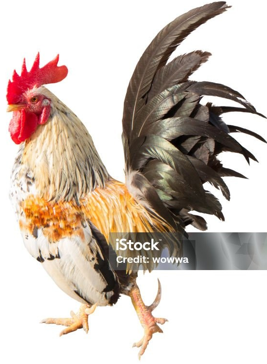
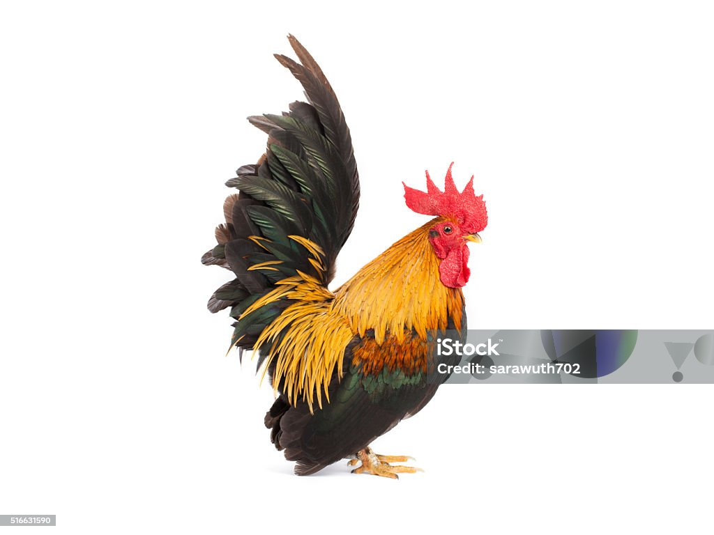

O galo-01 é um prato delicioso e suculento, preparado com ingredientes frescos e temperos especiais. Ele é conhecido por sua carne macia e saborosa, que derrete na boca a cada mordida. O galo-01 é uma escolha popular para refeições em família ou ocasiões especiais, oferecendo uma experiência gastronômica única e satisfatória.

O galo-02 é um prato igualmente delicioso, preparado com uma combinação de ingredientes frescos e temperos especiais. Ele é conhecido por sua carne suculenta e saborosa, que proporciona uma experiência gastronômica única. O galo-02 é uma escolha popular para refeições em família ou ocasiões especiais, oferecendo um sabor irresistível e satisfatório.

A comida magra-01 é uma opção saudável e deliciosa, perfeita para quem busca uma refeição nutritiva e saborosa. Preparada com ingredientes frescos e sem excesso de gordura, ela oferece um prato equilibrado que combina sabor e saúde.